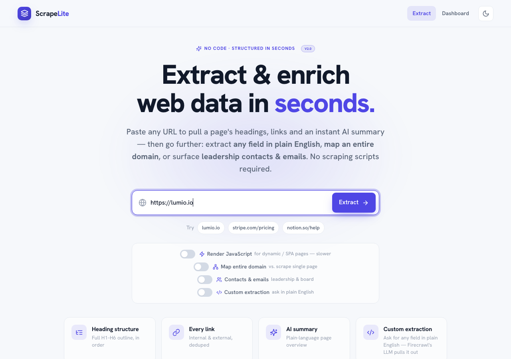
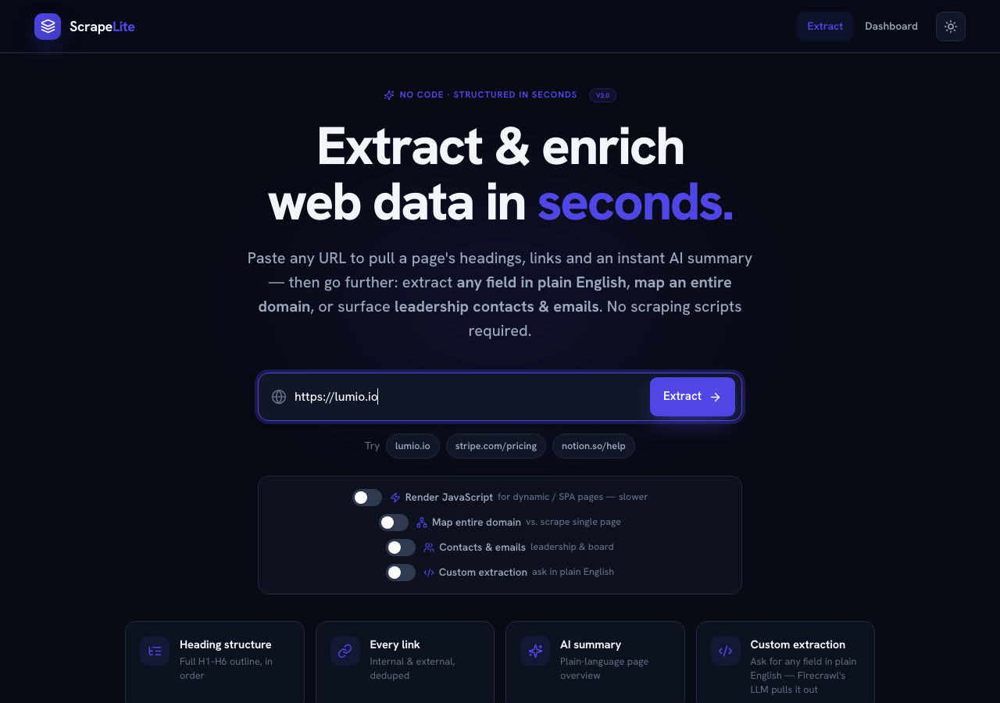
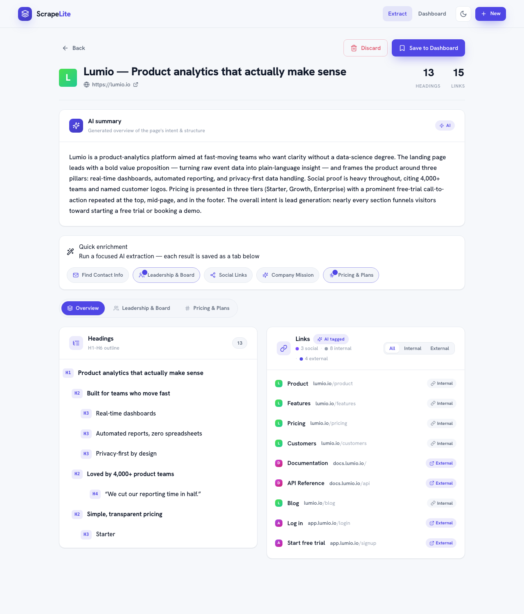
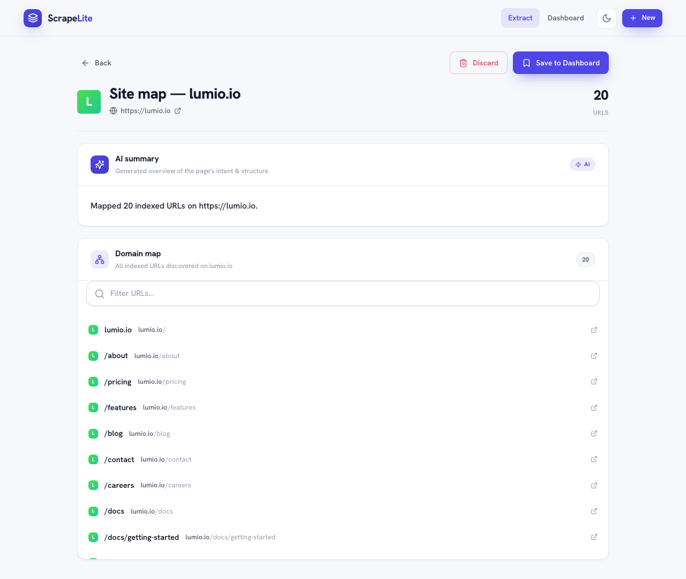
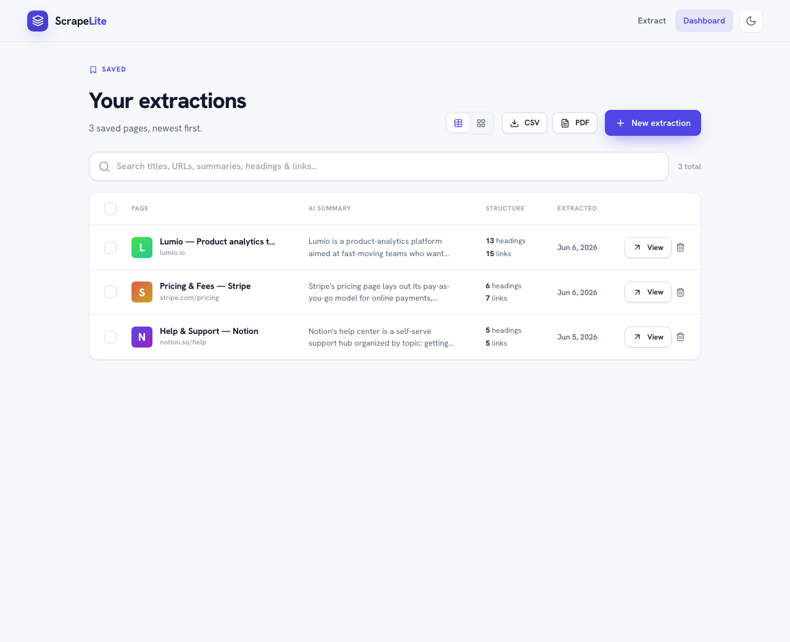
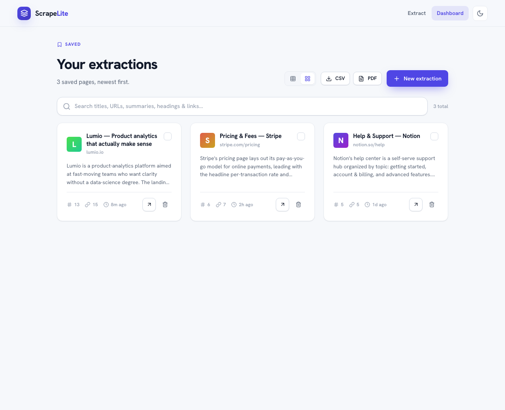

Application flow — screen-by-screen, with screenshots
ScrapeLite is a 3-screen single-page app with a persistent top navigation bar.
ScrapeLite is a 3-screen single-page app with a persistent top navigation bar.
┌─────────────────────────────────────────────────────────────────┐
│ TopBar: ScrapeLite logo │ Extract · Dashboard │ 🌙 theme │ +New │
└─────────────────────────────────────────────────────────────────┘
│ │ │
▼ ▼ ▼
/ (Home) ──Extract──▶ /preview ──Save──▶ /dashboard
Extract screen Review & enrich Saved archive
▲ │ │
└──────── New ◀───────────┴────── View / Open ◀────┘The end-to-end loop: Paste a URL on Home → review structure + summary on Preview → optionally enrich (tabs) → Save → it appears in the Dashboard → reopen, export, generate content, or email it.
7.1 Screen 1 — Home (Extract) · route /

Purpose: the entry point — turn a URL into an extraction.
What's on the screen (top to bottom):
- Eyebrow — "No code · structured in seconds" with a v2.0 pill.
- Hero headline — "Extract & enrich web data in seconds." + a one-paragraph value proposition.
- URL field — a globe-led input with a primary Extract button (label becomes Map domain when the map toggle is on). Invalid input shows an inline error and a red field outline.
- Example chips —
lumio.io,stripe.com/pricing,notion.so/help; click to fill the field. - Scrape-option toggles (four):
- ⚡ Render JavaScript — for dynamic/SPA pages (slower).
- 🗺️ Map entire domain — lists every indexed URL instead of scraping one page.
- 👥 Contacts & emails — leadership & board.
</>Custom extraction — ask in plain English (reveals the prompt box).
- Custom-extraction panel (appears when the Custom toggle is on) — a textarea plus 5 Quick Action preset chips that fill the prompt: Find Contact Info, Leadership & Board, Social Links, Company Mission, Pricing & Plans.
- Capability cards — an 8-card grid (3 v1 + 5 v2) describing everything the product can do.
Behavior notes:
- Map mode ignores per-page options and routes to the
/mapendpoint; a note explains this. - Submitting shows a full-screen 4-step loading animation, then navigates to Preview.
- On failure, you're returned to Home with an error modal offering Try again (re-runs the same URL + options).
Dark mode (theme is one click in the top bar, and persists):

7.2 Screen 2 — Preview (Review & Enrich) · route /preview

Purpose: review the extraction, enrich it, then save or discard.
What's on the screen (top to bottom):
- Action bar — Back (to Home), Discard (drops it, returns Home), Save to Dashboard (persists + navigates to Dashboard, with a saving overlay).
- Page identity — favicon monogram, page title, clickable URL, and stats (headings & links count, or URL count in map mode).
- AI summary card — the generated overview, badged "AI".
- Quick enrichment panel — the five capability buttons. Each runs in the background:
- while running → a spinner on the button,
- when done → a green ✓ badge,
- clicking a done button refreshes it.
(In the screenshot, Leadership & Board and Pricing & Plans show ✓ — they've been run.)
- Tabs — Overview plus one tab per executed enrichment (here: Leadership & Board, Pricing & Plans).
- Tab content:
- Overview → the Headings card (H1–H6 outline) and the Links card (AI-tagged, filterable All/Internal/External, with per-category counts) side by side.
- An enrichment tab → the structured data for that capability (e.g., a contacts list or pricing table), with a Refresh button and a "Saved N minutes ago" timestamp.
Map-mode variant — when you extracted with Map entire domain, the Overview tab shows a single Domain map card: a searchable list of every discovered URL, with a filter box and a count pill. (Quick enrichment is hidden in map mode.)

Behavior notes:
- Quick enrichment never shows the full-screen loader or navigates — the page stays put.
- Enrichment tabs are saved per-URL and reappear when you reopen this page from the Dashboard, even on another device (when Supabase is configured).
- The last-viewed extraction is restored if you reload the browser on this screen.
7.3 Screen 3 — Dashboard (Saved archive) · route /dashboard

Purpose: your searchable archive of saved extractions; the hub for export, content generation, and email.
What's on the screen:
- Header — "Your extractions", a count subtitle, and the action cluster:
- Table / Card layout toggle,
- CSV and PDF export buttons,
- New extraction (back to Home).
- Toolbar — a smart search box (matches across title, URL, summary, headings, links) and a count / selection bar.
- Table (default) — columns: select, Page (favicon + title + host), AI summary (snippet), Structure (heading & link counts), Extracted (date), and row actions (View, Delete). Clicking a row opens it in Preview.
- Pager — appears when results exceed the viewport-fit page size.
Selection bar — when you tick one or more rows, the toolbar swaps to: N selected · Clear · Generate · Send email.
- Generate opens the Content modal (SEO outline / competitor summary / social posts) for the first selected page.
- Send email opens the Email modal (multi-recipient) to send the selected pages.
Card view — the same data as cards (toggle persists):

Empty states — a friendly empty state when nothing is saved ("No extractions yet") and a "No matches" state when a search returns nothing.
7.4 Modals & system UI
| Element | Trigger | What it does |
|---|---|---|
| Loading screen | Submitting an extraction | Full-screen 4-step animated progress. |
| Saving overlay | Save on Preview | Branded loader over the page while persisting. |
| Content modal | Generate (Dashboard) | Pick a format, generate via Claude, copy the markdown. |
| Email modal | Send email (Dashboard) | Enter recipients, send selected extractions. |
| Error modal | Any failed action | Category-specific message + Try again retry. |
| Toasts | Every action | Brief confirmation, auto-dismiss (~2.6s). |
| Theme toggle | Top bar | Light/dark, persisted. |